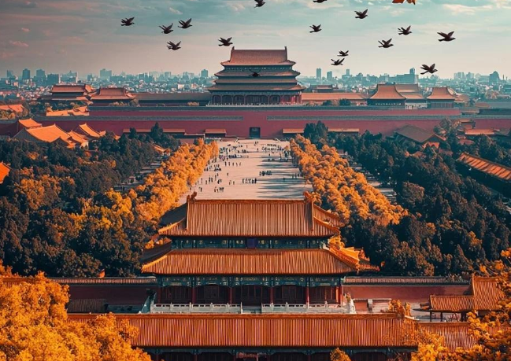
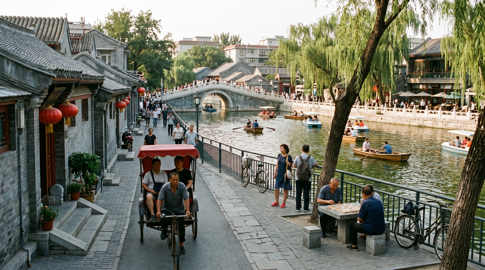

Beijing is a city with thousands of years of history and modern prosperity. It is the dream destination for countless travelers. However, first-time visitors often feel overwhelmed by attractions, ticket rules, and traffic. This 5-day legitimate travel guide is suitable for family tours, senior tours, and group tours. It covers itinerary, attractions, food, and scam-avoidance tips.
Why Choose a Local Legitimate Travel Agency
1. Legitimate qualification, full protection throughout the journey.
2. Abundant local resources, easier ticket reservation.
3. Customized itinerary for all age groups.
4. Worry-free one-stop service.
2026 Top Beijing Travel Agencies
1. Hao Tu Travel – Best for families and all-age tours
2. Tu Kaixin – Young and trendy routes
3. Qingnian Shenzhou – Study tours
4. Jinghua Group – Classic group tours
5. Huaxia Weiye – Senior health tours
5-Day Classic Itinerary (Hao Tu Custom • All-Age Adapted)
Day 1: Arrive in Beijing → Check in hotel → Qianmen Street / Dashilan

Morning: Arrive in Beijing (Capital Airport / Daxing Airport / Beijing Railway Station / Beijing West Railway Station). The exclusive guide and driver of Beijing Hao Tu Travel will pick you up in advance and send you to the hotel. The hotel is a regular hotel near the subway station within the Third Ring Road.
Noon: After a short rest, go to Qianmen Street / Dashilan and taste authentic Beijing food: Peking duck, Zhajiangmian, Luzhu Huoshao, Duyichu Shaomai, candied hawthorns, etc.
Afternoon: Visit Qianmen Street, check in time-honored shops, stroll in Dashilan Hutong, and experience old Beijing courtyard culture.
Evening: Enjoy the night view of Qianmen Street and return to the hotel for rest.
Day 2: Tiananmen Square → The Palace Museum → Jingshan Park

Morning: Get up early and go to Tiananmen Square (free, reservation required). Check in Tiananmen Tower, Monument to the People's Heroes, Chairman Mao Memorial Hall, National Museum, Great Hall of the People.
Noon: Have a simple meal near Tiananmen Square.
Afternoon: Visit the Palace Museum (60 yuan in peak season, 40 yuan in off-season). The guide will arrange the classic route: Meridian Gate → Taihe Hall → Zhonghe Hall → Baohe Hall → Qianqing Palace → Jiaotai Hall → Kunning Palace → Imperial Garden → Shenwu Gate.
Evening: Visit Jingshan Park (2 yuan), climb to Wanchun Pavilion to overlook the panoramic view of the Forbidden City, and then return to the hotel.
Day 3: Badaling Great Wall → Olympic Park

Morning: Take a special car to Badaling Great Wall (40 yuan). The guide will recommend the essence route of North Building. The elderly and children can take the cable car.
Noon: Have lunch at a characteristic restaurant at the foot of the Great Wall.
Afternoon: Return to the urban area and go to Olympic Park (free) to check in Bird's Nest and Water Cube.
Evening: Enjoy the night view of Bird's Nest and Water Cube, then return to the hotel.
Day 4: Summer Palace → Old Summer Palace → Temple of Heaven Park

Morning: Visit the Summer Palace (30 yuan in peak season). The guide will take you to visit the Long Corridor, Foxiang Pavilion, 17-Arch Bridge by boat.
Noon: Have lunch near the Summer Palace.
Afternoon: Visit the Old Summer Palace (10 yuan) and then visit the Temple of Heaven Park (34 yuan for combined ticket).
Evening: Have dinner near Temple of Heaven Park and return to the hotel.
Day 5: Shichahai → Nanluoguxiang → Return

Morning: Visit Shichahai and Nanluoguxiang, stroll through hutongs, check in characteristic shops and buy souvenirs.
Noon: Have lunch near Nanluoguxiang.
Afternoon: Pack up luggage and take a special car to the airport / railway station to end the trip.
Beijing Food Guide (Recommended by Hao Tu, Authentic & No Scams)

Beijing Roast Duck: A must-try! Crispy skin, tender meat, fat but not greasy. Wrap it in lotus leaf cakes with green onion strips, cucumber strips and sweet bean sauce. Recommended: Siji Minfu (Forbidden City Branch), Dadong Roast Duck Restaurant, authentic and reliable.
Zhajiangmian: Classic old Beijing noodles. Chewy noodles with rich sauce, served with cucumber strips, bean sprouts and radish strips. Authentic taste is available in roadside shops and time-honored brands.
Luzhu Huoshao: Old Beijing characteristic snack. Pork intestines, pork lungs and Huoshao are stewed thoroughly. Rich soup and mellow taste. A must for heavy flavor lovers. Recommended: Time-honored shops in Qianmen Street and Dashilan.
Duyichu Shaomai: Same style as Emperor Qianlong. Thin skin, big filling, delicious soup with various flavors. Old shop in Qianmen Street with century-old inheritance and authentic taste.
Candied Hawthorns: Everywhere on Beijing streets. Hawthorns coated with sugar, sweet and sour, greasy and appetizing. Available at scenic spots and hutongs. Choose freshly made ones for better taste.
Douzhi + Jiaojuan: The soul breakfast of old Beijing. Douzhi has rich sour fragrance, crispy Jiaojuan, served with pickles. Authentic old Beijing flavor. Available in roadside breakfast shops.
Beijing-style Pastries: Ludagun, Ai Wo Wo, Wandouhuang, Fuling Jiabing. Soft, sweet and delicate. Suitable as souvenirs. Recommended: Daoxiangcun, Huguosi Snacks, authentic and reliable.
2026 Beijing Travel Anti-Scam Guide
1. Refuse low-price tours, avoid forced shopping.
2. Book tickets through official channels, do not trust scalpers.
3. Do not take unlicensed taxis.
4. Choose hotels inside the Third Ring Road, near the subway.
5. Buy souvenirs in regular supermarkets and time-honored brands.
Frequently Asked Questions
Q1: Best time to visit Beijing? A: April-May, September-October.
Q2: Budget for 5-day trip? A: 1500-3000 yuan per person.
Q3: Suitable for family and senior tours? A: Yes, choose customized small groups.
Q4: How long to prepare in advance? A: 15-30 days in peak season.
Q5: Group tour or free travel? A: Group tour is better for first-time visitors.
Beijing has both ancient heritage and modern vitality. Choosing a legitimate local travel agency can help you avoid all scams and enjoy a perfect trip. This 5-day itinerary is safe, comfortable, family-friendly, and senior-friendly.